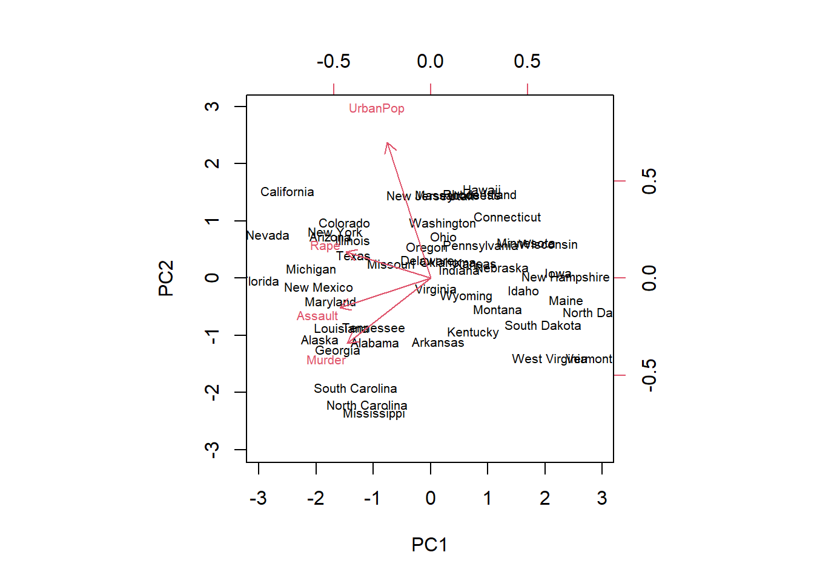
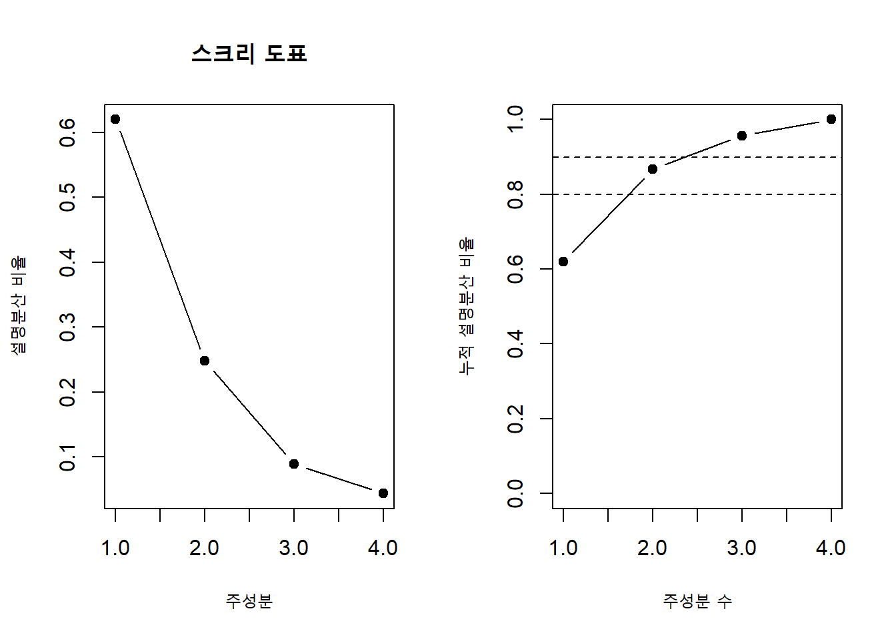
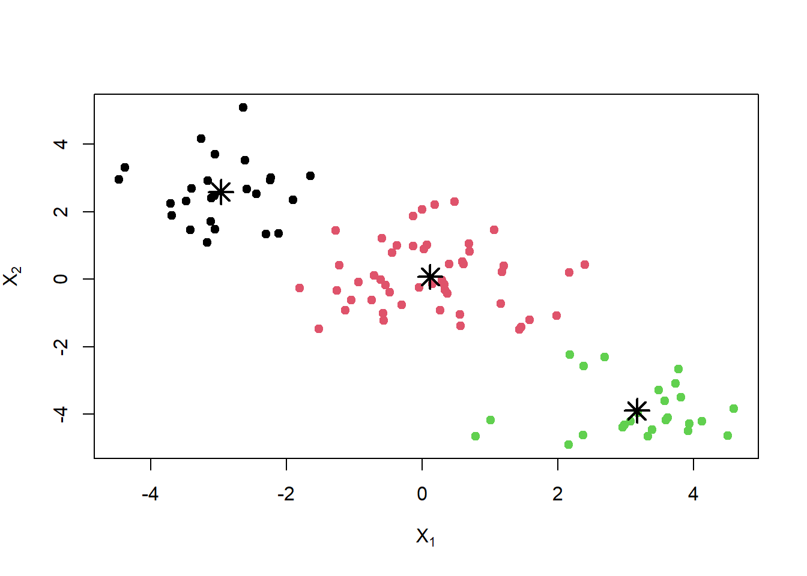
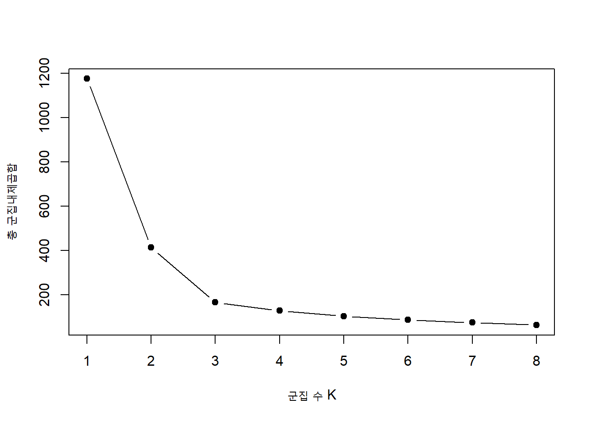
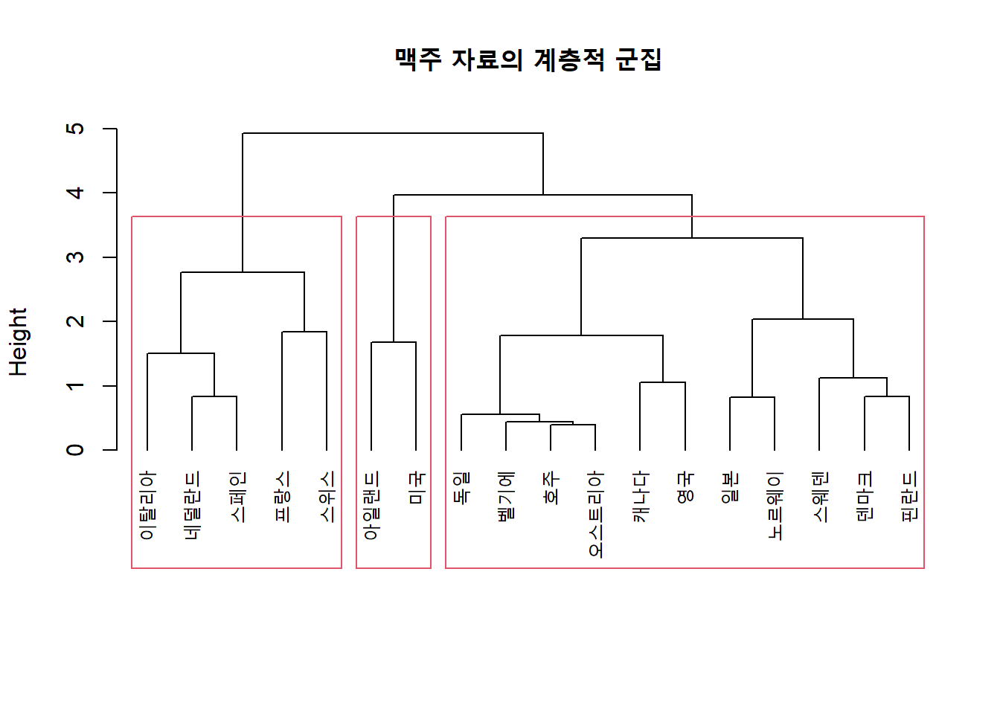
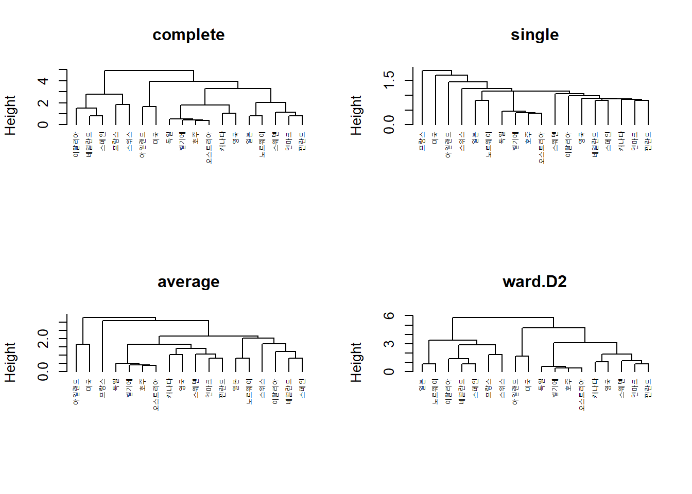
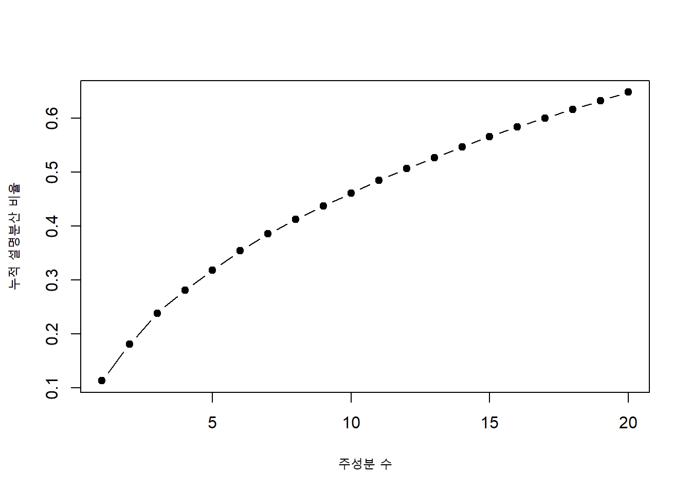
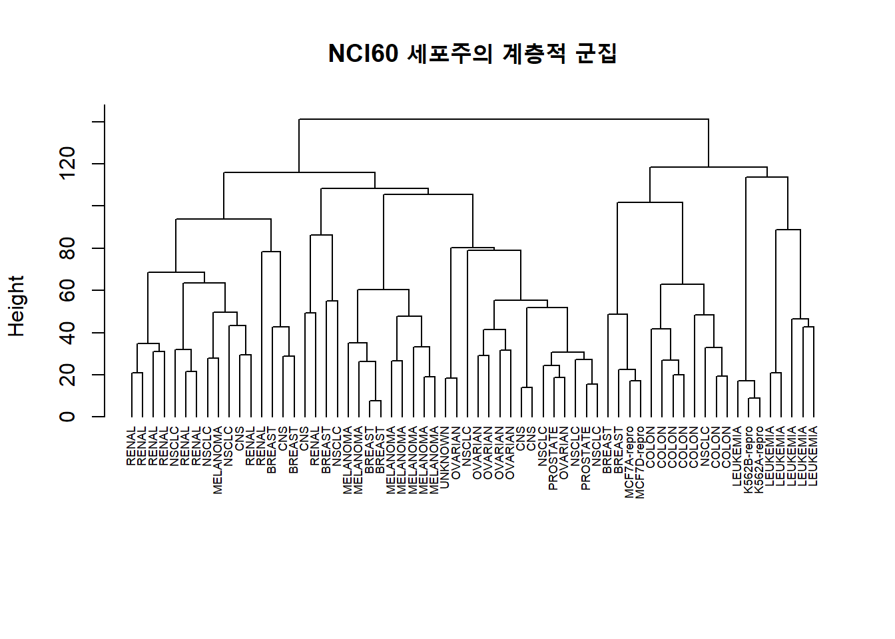

head(USArrests)apply(USArrests, 2, mean)#> Murder Assault UrbanPop Rape
#> 7.788 170.760 65.540 21.232apply(USArrests, 2, sd)#> Murder Assault UrbanPop Rape
#> 4.355510 83.337661 14.474763 9.366385지도학습에서는 각 관측치에 반응변수 \(Y\)가 있고 설명변수 \(X\)를 이용해 \(Y\)를 예측한다. 비지도학습(unsupervised learning)에서는 반응변수가 없다. 목표는 자료의 내부 구조, 저차원 표현, 잠재적 집단을 발견하는 것이다.
대표적인 비지도학습 방법은 다음과 같다.
비지도학습은 탐색적 성격이 강하다. 정답표지가 없으므로 결과의 품질을 단일한 오차율로 평가하기 어렵고, 전처리와 거리척도에 따라 결과가 크게 바뀔 수 있다.
\(p\)개의 표준화된 변수 \(X_1,\ldots,X_p\)가 있다고 하자. 첫 번째 주성분은
\[ Z_1=\phi_{11}X_1+\phi_{21}X_2+\cdots+\phi_{p1}X_p \]
중 표본분산이 최대가 되는 선형결합이다. 계수 벡터의 크기가 무한히 커지는 것을 막기 위해
\[ \sum_{j=1}^{p}\phi_{j1}^2=1 \]
이라는 제약을 둔다. \(\phi_{j1}\)을 첫 번째 주성분의 적재량(loading)이라고 하며, 각 관측치의 \(Z_1\) 값을 점수(score)라고 한다.
두 번째 주성분은 첫 번째 주성분과 직교하면서 남아 있는 변동을 가장 많이 설명한다. 같은 방식으로 최대 \(\min(n-1,p)\)개의 주성분을 얻는다.
PCA는 자료를 가장 잘 설명하는 새로운 직교 좌표축으로 회전시키는 과정으로 볼 수 있다. 첫 번째 축은 자료가 가장 넓게 퍼진 방향, 두 번째 축은 첫 번째 축에 수직이면서 다음으로 변동이 큰 방향이다.
또 다른 해석은 저차원 부분공간에 대한 재구성 오차를 최소화한다는 것이다. 첫 \(M\)개 주성분은 원자료를 \(M\)차원 부분공간으로 투영했을 때 제곱거리 합을 최소화한다.
PCA는 변수의 분산에 민감하다. 단위가 큰 변수는 단지 척도가 크다는 이유로 첫 주성분을 지배할 수 있다. 변수 단위가 다르거나 분산 차이가 의미 있는 신호가 아니라면 평균을 빼고 표준편차로 나눈 뒤 PCA를 수행한다.
\[ z_{ij}=\frac{x_{ij}-\bar x_j}{s_j} \]
반대로 모든 변수가 같은 단위이고 변동 크기 자체가 중요한 경우에는 표준화하지 않을 수도 있다. 이 선택은 분석 목적에 따라 명시적으로 결정해야 한다.
USArrests 자료에는 50개 주의 살인, 폭행, 도시인구 비율, 강간 관련 변수가 있다.
head(USArrests)apply(USArrests, 2, mean)#> Murder Assault UrbanPop Rape
#> 7.788 170.760 65.540 21.232apply(USArrests, 2, sd)#> Murder Assault UrbanPop Rape
#> 4.355510 83.337661 14.474763 9.366385변수의 단위와 표준편차가 크게 다르므로 표준화한 PCA를 수행한다.
pca_arrests <- prcomp(USArrests, center = TRUE, scale. = TRUE)
summary(pca_arrests)#> Importance of components:
#> PC1 PC2 PC3 PC4
#> Standard deviation 1.5749 0.9949 0.59713 0.41645
#> Proportion of Variance 0.6201 0.2474 0.08914 0.04336
#> Cumulative Proportion 0.6201 0.8675 0.95664 1.00000pca_arrests$rotation#> PC1 PC2 PC3 PC4
#> Murder -0.5358995 -0.4181809 0.3412327 0.64922780
#> Assault -0.5831836 -0.1879856 0.2681484 -0.74340748
#> UrbanPop -0.2781909 0.8728062 0.3780158 0.13387773
#> Rape -0.5434321 0.1673186 -0.8177779 0.08902432rotation은 주성분 적재량 행렬이다.x는 각 관측치의 주성분 점수이다.biplot(pca_arrests, scale = 0, cex = 0.65)
바이플롯에서 관측치는 주성분 점수로, 변수는 적재량 방향으로 표현된다. 화살표 방향이 비슷한 변수는 양의 상관, 반대 방향은 음의 상관을 시사한다. 화살표가 긴 변수는 표시된 주성분 평면에서 잘 표현된다.
\(m\)번째 주성분의 분산을 \(\lambda_m\)이라고 하면 설명분산 비율(proportion of variance explained, PVE)은
\[ PVE_m=\frac{\lambda_m}{\sum_{j=1}^{p}\lambda_j} \]
이다. 첫 \(M\)개 주성분의 누적 설명분산 비율은
\[ \sum_{m=1}^{M}PVE_m \]
이다.
pve <- pca_arrests$sdev^2 / sum(pca_arrests$sdev^2)
pca_variance <- data.frame(
주성분 = paste0("PC", seq_along(pve)),
설명분산비율 = pve,
누적설명분산비율 = cumsum(pve)
)
pca_variancepar(mfrow = c(1, 2))
plot(pve, type = "b", pch = 19,
xlab = "주성분", ylab = "설명분산 비율",
main = "스크리 도표")
plot(cumsum(pve), type = "b", pch = 19,
xlab = "주성분 수", ylab = "누적 설명분산 비율",
ylim = c(0, 1))
abline(h = c(0.8, 0.9), lty = 2)
par(mfrow = c(1, 1))주성분 수를 결정하는 절대적인 규칙은 없다. 다음 기준을 함께 고려한다.
탐색적 시각화에서는 2~3개 주성분을 사용하더라도, 원자료 구조의 일부만 보인다는 점을 기억해야 한다.
군집분석은 관측치들을 서로 유사한 집단으로 나눈다. 같은 군집의 관측치는 서로 유사하고 다른 군집의 관측치는 서로 다르도록 한다.
PCA와 군집분석은 목적이 다르다.
PCA 점수에서 군집을 수행할 수는 있지만, PCA가 군집 분리를 보장하는 것은 아니다. 변동이 큰 방향과 군집을 구분하는 방향이 다를 수 있기 때문이다.
\(K\)-평균 군집(\(K\)-means clustering)은 관측치를 미리 정한 \(K\)개의 겹치지 않는 군집 \(C_1,\ldots,C_K\)로 나누고 군집 내 변동을 최소화한다.
\[ \min_{C_1,\ldots,C_K} \sum_{k=1}^{K}W(C_k) \]
유클리드 거리의 제곱을 사용하면
\[ W(C_k)=\sum_{i\in C_k}\|x_i-\bar x_k\|^2 \]
이다. \(\bar x_k\)는 \(k\)번째 군집의 중심(centroid)이다.
이 알고리즘은 각 단계에서 목적함수를 감소시키지만 전역 최적해를 보장하지 않는다. 따라서 여러 초기값으로 반복하고 군집 내 제곱합이 가장 작은 결과를 선택해야 한다. R의 kmeans()에서는 nstart를 충분히 크게 설정한다.
set.seed(1)
x <- matrix(rnorm(100 * 2), ncol = 2)
x[1:25, 1] <- x[1:25, 1] + 3
x[1:25, 2] <- x[1:25, 2] - 4
x[26:50, 1] <- x[26:50, 1] - 3
x[26:50, 2] <- x[26:50, 2] + 3
fit_kmeans3 <- kmeans(x, centers = 3, nstart = 50)
plot(x, col = fit_kmeans3$cluster, pch = 19,
xlab = expression(X[1]), ylab = expression(X[2]))
points(fit_kmeans3$centers, pch = 8, cex = 2, lwd = 2)
fit_kmeans3$tot.withinss#> [1] 165.8412set.seed(2)
fit_start1 <- kmeans(x, centers = 3, nstart = 1)
set.seed(3)
fit_start50 <- kmeans(x, centers = 3, nstart = 50)
c(
nstart_1 = fit_start1$tot.withinss,
nstart_50 = fit_start50$tot.withinss
)#> nstart_1 nstart_50
#> 165.8412 165.8412nstart=50은 50개의 초기해를 시도해 그중 목적함수가 가장 작은 결과를 반환한다.
\(K\)가 증가하면 군집 내 제곱합은 항상 감소한다. 따라서 최소값만으로 \(K\)를 고를 수 없다. 다음 방법을 사용할 수 있다.
set.seed(4)
k_grid <- 1:8
withinss <- sapply(k_grid, function(k) {
kmeans(x, centers = k, nstart = 30)$tot.withinss
})
plot(k_grid, withinss, type = "b", pch = 19,
xlab = "군집 수 K", ylab = "총 군집내제곱합")
국가별 맥주 소비 패턴을 나타내는 간단한 예제 자료를 사용한다. 변수의 단위가 다르므로 표준화한 뒤 군집을 수행한다.
beer <- data.frame(
국가 = c("호주", "오스트리아", "벨기에", "캐나다", "덴마크",
"핀란드", "프랑스", "독일", "아일랜드", "이탈리아",
"일본", "네덜란드", "노르웨이", "스페인", "스웨덴",
"스위스", "영국", "미국"),
맥주 = c(261, 279, 295, 283, 254, 226, 40, 279, 321, 85, 90, 180, 109, 144, 194, 147, 334, 249),
와인 = c(212, 191, 212, 127, 109, 129, 260, 191, 46, 237, 60, 175, 100, 193, 66, 175, 110, 84),
증류주 = c(72, 75, 68, 100, 78, 57, 103, 60, 118, 42, 65, 55, 50, 35, 60, 90, 75, 158)
)
rownames(beer) <- beer$국가
beer_x <- scale(beer[, -1])
head(beer_x)#> 맥주 와인 증류주
#> 호주 0.5792083 0.9800580 -0.12148603
#> 오스트리아 0.7814319 0.6548061 -0.02055917
#> 벨기에 0.9611862 0.9800580 -0.25605516
#> 캐나다 0.8263704 -0.3364378 0.82049794
#> 덴마크 0.5005658 -0.6152252 0.08036768
#> 핀란드 0.1859958 -0.3054615 -0.62612029set.seed(5)
beer_k3 <- kmeans(beer_x, centers = 3, nstart = 100)
beer_result <- data.frame(
국가 = beer$국가,
군집 = factor(beer_k3$cluster)
)
beer_result[order(beer_result$군집), ]aggregate(beer[, -1], by = list(군집 = beer_k3$cluster), mean)계층적 군집(hierarchical clustering)은 군집 수 \(K\)를 처음부터 지정하지 않고 군집들의 중첩된 계층구조를 만든다. 결과는 덴드로그램(dendrogram)으로 표현한다.
가장 흔한 방식은 상향식 또는 응집형(agglomerative) 군집이다.
덴드로그램에서 두 가지가 합쳐지는 높이는 두 군집 사이의 비유사도를 나타낸다. 원하는 높이에서 수평으로 자르면 군집 수를 정할 수 있다.
beer_distance <- dist(beer_x, method = "euclidean")
beer_hc <- hclust(beer_distance, method = "complete")
plot(beer_hc, labels = beer$국가, hang = -1,
xlab = "", sub = "", main = "맥주 자료의 계층적 군집")
rect.hclust(beer_hc, k = 3)
beer_hierarchical_cluster <- cutree(beer_hc, k = 3)
data.frame(
국가 = beer$국가,
군집 = beer_hierarchical_cluster
)[order(beer_hierarchical_cluster), ]군집 \(A\)와 \(B\) 사이의 비유사도를 어떻게 정의하는지에 따라 결과가 달라진다.
\[ d(A,B)=\max_{i\in A,j\in B}d(i,j) \]
두 군집 사이에서 가장 먼 관측치 쌍의 거리를 사용한다. 비교적 조밀하고 크기가 비슷한 군집을 만드는 경향이 있다.
\[ d(A,B)=\min_{i\in A,j\in B}d(i,j) \]
가장 가까운 관측치 쌍의 거리를 사용한다. 길게 연결된 사슬 모양 군집이 생기는 체이닝 현상이 나타날 수 있다.
\[ d(A,B)=\frac{1}{|A||B|} \sum_{i\in A}\sum_{j\in B}d(i,j) \]
모든 관측치 쌍 거리의 평균을 사용한다. 단일 연결과 완전 연결 사이의 절충이다.
중심 연결은 군집 중심 사이의 거리를 사용한다. Ward 방법은 군집을 합쳤을 때 군집내제곱합의 증가가 가장 작은 두 군집을 합친다. 유클리드 거리와 함께 사용하면 구형이고 크기가 비슷한 군집을 만드는 경향이 있다.
par(mfrow = c(2, 2))
for (method_name in c("complete", "single", "average", "ward.D2")) {
fit <- hclust(beer_distance, method = method_name)
plot(fit, labels = beer$국가, hang = -1,
main = method_name, xlab = "", sub = "", cex = 0.65)
}
par(mfrow = c(1, 1))유클리드 거리는 가장 널리 쓰이지만 자료 유형과 목적에 따라 다른 비유사도를 사용할 수 있다.
변수의 단위가 다르면 거리 계산 전에 표준화한다. 그러나 모든 변수를 자동으로 같은 가중치로 두는 것이 항상 적절한 것은 아니다. 도메인 지식에 따라 변수 선택과 가중치를 결정해야 한다.
NCI60 자료에는 암세포주와 다수 유전자의 발현값이 포함되어 있다. 정답 범주를 군집 적합에 사용하지 않고, 군집 결과를 해석할 때만 비교한다.
library(ISLR2)
data(NCI60)
nci_data <- NCI60$data
nci_labels <- NCI60$labs
dim(nci_data)#> [1] 64 6830table(nci_labels)#> nci_labels
#> BREAST CNS COLON K562A-repro K562B-repro LEUKEMIA
#> 7 5 7 1 1 6
#> MCF7A-repro MCF7D-repro MELANOMA NSCLC OVARIAN PROSTATE
#> 1 1 8 9 6 2
#> RENAL UNKNOWN
#> 9 1고차원 자료에서는 변수 수가 매우 많으므로 상관거리나 PCA 점수 기반 군집을 고려할 수 있다. 아래에서는 유전자별 표준화 후 PCA를 수행하고 상위 주성분에서 계층적 군집을 수행한다.
nci_pca <- prcomp(nci_data, center = TRUE, scale. = TRUE)
nci_pve <- nci_pca$sdev^2 / sum(nci_pca$sdev^2)
plot(cumsum(nci_pve[1:20]), type = "b", pch = 19,
xlab = "주성분 수", ylab = "누적 설명분산 비율")
n_components <- 10
nci_scores <- nci_pca$x[, 1:n_components, drop = FALSE]
nci_hc <- hclust(dist(nci_scores), method = "complete")
plot(nci_hc, labels = nci_labels, hang = -1,
xlab = "", sub = "", cex = 0.55,
main = "NCI60 세포주의 계층적 군집")
군집이 알려진 암 유형과 일부 일치하더라도 이를 자동으로 정답이라고 해석해서는 안 된다. 발현 패턴은 조직 유형 외에도 실험배치, 세포 상태, 측정 잡음의 영향을 받을 수 있다.
결측치 처리, 로그 변환, 표준화, 이상치 처리가 군집 결과를 크게 바꿀 수 있다. 특히 거리 기반 분석에서는 전처리를 분석의 일부로 명시하고 민감도 분석을 수행해야 한다.
군집 수는 자료에 유일하게 존재하는 정답이라기보다 분석 목적에 따른 요약 수준일 수 있다. 여러 지표와 도메인 해석을 함께 사용한다.
표본을 일부 제거하거나 재표본추출했을 때 같은 군집 구조가 유지되는지 확인한다. 군집이 불안정하면 해석을 강하게 주장하지 않는다.
PCA의 첫 두 축에서 군집이 분리되어 보이지 않는다고 해서 고차원 공간에서도 분리되지 않는 것은 아니다. 반대로 2차원 그림에서 우연히 분리되어 보일 수도 있다.
군집분석은 관측된 유사성에 기반한 기술적 요약이다. 발견된 군집이 자연적 질병 아형, 고객의 본질적 유형, 생물학적 기전을 자동으로 의미하지 않는다. 외부 변수와 독립자료를 이용해 재현성과 유용성을 검증해야 한다.